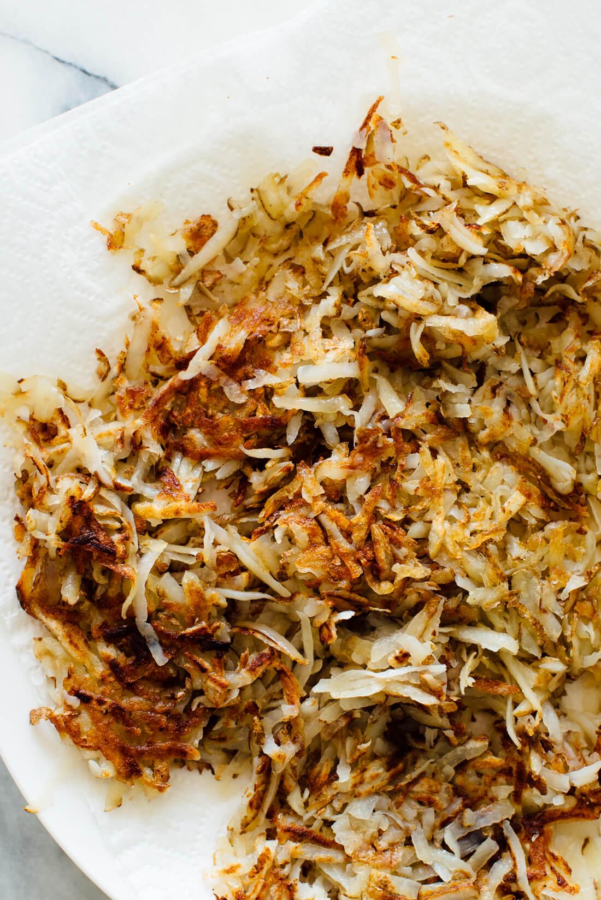

Crispy Hash Browns

Description
These delicious hash browns are lighter and healthier than greasy diner hash browns, since they’re made with olive oil. Recipe yields 4 servings; you can double or triple this recipe but cook in batches as written below.
Ingredients
- 1 pound Russet potatoes (2 small-to-medium), peeled if desired
- ½ teaspoon salt
- ¼ teaspoon garlic powder
- ¼ teaspoon onion powder
- ¼ cup extra-virgin olive oil
- Scrub the potatoes clean and grate them on a large-holed cheese grater (I left the skin on, but you can peel it first if you’d like). In a fine-mesh sieve, rinse the grated potato well until the water runs clear.
- Drain the potatoes, and then place them potato on a clean tea towel or several paper towels. Twist the towel to remove as much moisture from the potatoes as possible (you might need to do this in two batches).
- Transfer the grated potato to a bowl and toss it with the salt, garlic powder and onion powder.
- In a large skillet (preferably cast iron, but non-stick works, too), warm the olive oil over medium heat until shimmering and a piece of grated potato sizzles on contact. Spread the potatoes over the skillet in an even layer and press them down with a spatula. Let them cook, undisturbed, for 2 minutes.
- Stir again, press them down again, and cook for another 2 minutes. Repeat in 2-minute intervals, flipping in sections once they’re crispy enough to do so, until the potatoes are golden brown and crispy, about 4 to 8 more minutes. Meanwhile, line a plate with a couple of layers of paper towels to absorb excess oil, and set it near the stove.
- Transfer the hash browns to the lined plate and let them drain for a minute. (If you’re making multiply batches of hash browns, repeat these steps as necessary—keep in mind that your skillet will be really hot so your next batch may cook faster.)
- Season to taste with additional salt, if necessary, and serve hot.